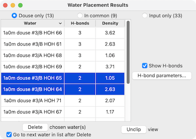

The Water Placement tool in ChimeraX:
Users should cite:
Macromolecular structure determination using X-rays, neutrons and electrons: recent developments in Phenix. Liebschner D, Afonine PV, Baker ML, Bunkóczi G, Chen VB, Croll TI, Hintze B, Hung LW, Jain S, McCoy AJ, Moriarty NW, Oeffner RD, Poon BK, Prisant MG, Read RJ, Richardson JS, Richardson DC, Sammito MD, Sobolev OV, Stockwell DH, Terwilliger TC, Urzhumtsev AG, Videau LL, Williams CJ, Adams PD. Acta Crystallogr D Struct Biol. 2019 Oct 1;75(Pt 10):861-877.
Phenix must be installed locally and the PhenixUI bundle installed in ChimeraX. The program location can be specified (saved in preferences) beforehand with the phenix command. If no location has been specified, however, ChimeraX will look for a folder name that starts with phenix in the user's home directory, and on Mac only, if none is found there, then in the system /Applications folder.
After the douse calculation completes, the resulting waters, as well as any that were already present in the atomic structure beforehand, can be inspected individually for H-bonds and agreement with the density, and optionally deleted.
The Check Waters tool is a similar interface for inspecting the waters already present in a structure. See also: Rotamers, Add Hydrogens, Altloc Explorer, Renumber Residues, Change Chain IDs, H-Bonds, Local EM Fitting, Fit Ligand, Fit Loops, view, clip, video: Phenix/ChimeraX setup
The atomic structure and corresponding density map should be open in ChimeraX before the tool is started. Water Placement can then be started from the Phenix section of the Tools menu. An initial dialog will appear for choosing the atomic structure and map from menus of the available models, as well as other settings:
Clicking OK initiates the douse calculation. After the calculation completes, another panel will appear with a list of the waters in the structure.
|  |
There are three options for which set of waters to list, with their respective numbers of waters in parentheses:
For each water, the list gives the number of H-bonds, and if a corresponding density map was open before Check Waters was started, the Density at atom positions summed over the atoms in the residue: usually just one oxygen, but including hydrogens if present. The list can be sorted on any column by clicking the column heading, and it can be saved as a comma- or tab-separated file by choosing Save CSV or TSV File... from the tool's context menu.
One or more waters can be chosen from the list by clicking and dragging with the left mouse button; Ctrl-click (or command-click if using a Mac) toggles whether a water is chosen. Choosing waters in the list automatically selects them and focuses the view on their near vicinities (atoms within 4Å), slicing the structure by placing near/far clipping planes.
H-bonds are displayed as pseudobonds unless Show H-bonds is turned off (initial default on). Clicking H-bond parameters opens a separate dialog with several of the calculation options that also appear in the H-Bonds tool; clicking Apply recalculates the H-bonds accordingly.